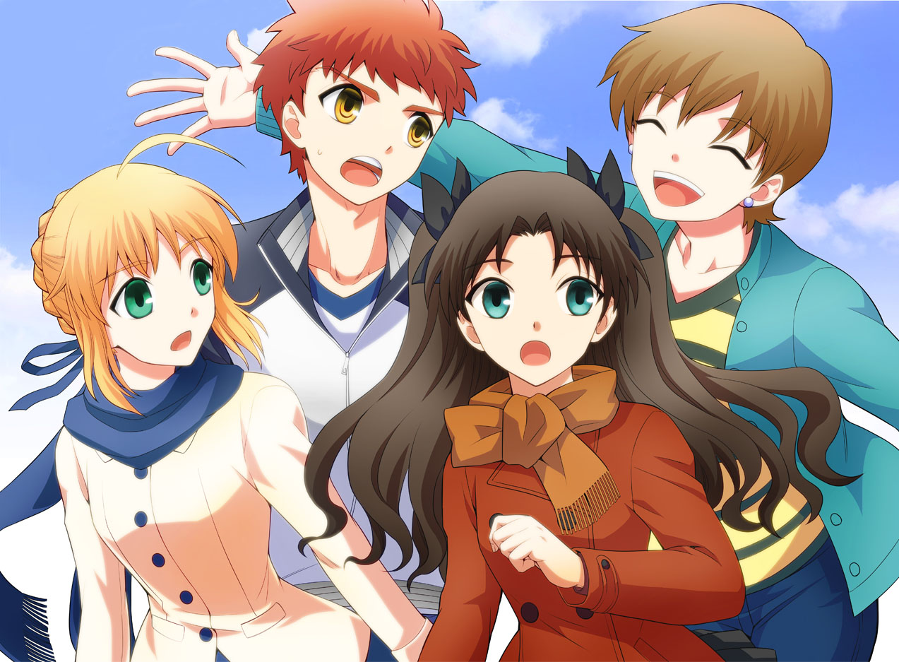
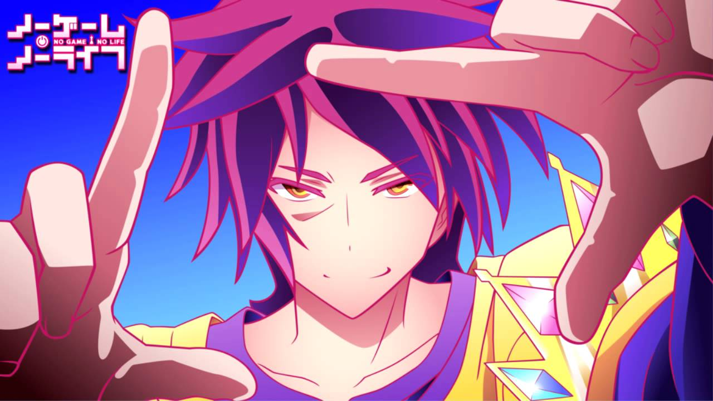
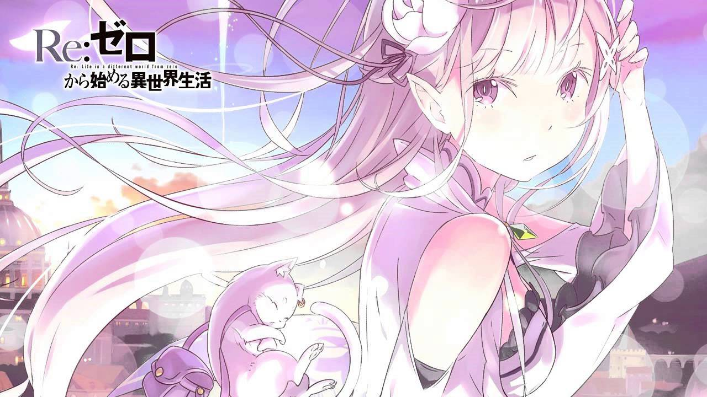

My first post about anime.3/6/2016
We inform users obut our new project which name is 'Anime News Blog'. Today beginning a new blog about news anime and author will be Nicolai Cushnir. :v and many other things. Here I think this blog you will appreciate me because I had worked to him. However, anime that will be published once a week because in japan all new series appears once a week and we have to wait for the English translation. :) Good Luck! and let's go to begin.
Fate Stay Night 3/6/2015
Simple Japanese teenager Shiro Emiya lived happily ever after in his home town of Fuyuki and suddenly found himself embroiled in a war of some master magicians of the Holy Grail. On the one hand, the magician guy was mediocre, and the chances of survival seemed unimportant. But the old woman with a scythe in there somewhere, and your own fighter - Saber blonde beauty - is already here, and to communicate with her much nicer! Yes, and "the queen of the school," Rin Tohsaka was suddenly a fellow Master and World girl and her Servant Archer - a rare type of harmful, so can bear. Of course, the grand prize Siro did not need to kill someone, he categorically did not want to, but "in war as in war." What can not be prevented - to head, here is our hero and "signed up for the Grail." Everything would be just great if Emiya-kun sat quietly and worked "the second ...
Killer Akama 3/6/2015

Swordsman Tatsumi, a simple boy from rural areas went to the Capital to earn money for his starving village. But when he reached there he finds out that a great and beautiful capital is only an appearance. City mired in corruption, cruelty and lawlessness that come from the Prime Minister that ruled the country from behind the scenes. But as we all know - "One is a warrior," and there is nothing you can do about it, especially when your enemy head of state, or rather the one who is covered by them.Is Tatsumi find like-minded people and would, if something changed? Watch and find out for yourself.
No Game No Life Season 2 Release dates 3/6/2015
“No Game No Life” also known as “Nōgēmu Nōraifu” is an anime adaptation of the Japanese light novel series created by Madhouse studio, directed by Atsuko Ishizuka, that debuted on April 9, 2014, on AT-X, and later was premiered on Tokyo MX, SUN, KBS and other Japanese television networks. The anime series follows the life of two gamers (brother and sister), who should act as saviors of mankind in the alternative world. The anime series was licensed for North America by “Sentai Filmworks,” and thus the American premiere of the anime series took place in July, 2015. The anime series is also broadcast on “Crunchyroll” through their website and on “Anime Network.”
“No Game No Life” Anime Series Brief Overview
The storyline of the anime series revolves around Sora and Shiro step-siblings, who prefer to be isolated from the real world and its social life. However, they both inseparable as in the real world as well as into a virtual world. Their individual skills in the aggregate make them an ideal team. Sora possesses a highly developed intuition while Shiro possesses a brilliant intellect, the level of which is out of the ordinary. In the online gaming world this pair known as “Blank,” because their nicknames always empty. But, nevertheless, each gamer knows them as an invincible team of gamers.
Season 2 Release Date
At the moment, “Madhouse” hasn’t yet announced their plans in regard to renewal of “No Game No Life” for a second season. However, the original series of light novels is still ongoing. Thus, we hope that the anime series will be renewed for a second season. However, we’d prefer to wait for the official announcement. Fortunately, thanks to our notification system, we may notify you about the renewal or cancellation of the anime series, as well as about the “No Game No Life” season 2 release date. Don’t miss the premiere! Subscribe to our notifications.
Starting Life in Another World 3/6/2015
On the way back from the store Subaru Natsuki suddenly call to another world. It is worth God knows where, no trace of the calling, and it more and attack! The matter would be absolutely rubbish, if not serebrovolosaya beautiful maiden with fluffy Kotik ready, which makes a Subaru, after which he joined in gratitude to her. Once they find a clue - and both immediately killed. Subaru wakes up in the same place as the first time, and finds a good ability - "Return to the past after the death." Is helpless guy Will, able only to wind off time to save the girl from a deadly fate?